Home Page
Latest News
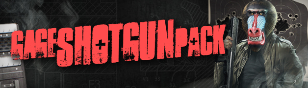
Gage Shotgun Pack DLC Now Available
3/07/2014
Finally shotguns get some love!
The Gage Shotgun Pack DLC is the seventh DLC pack for PAYDAY 2 and adds Gage’s favorite shotguns to the player’s weapon arsenal. Depending on what kind of ammo type you use, the shotgun pellets you fire can have armor penetration or be explosive, stunning your opponents.
Three new shotguns, four new ammo types, weapon mods, four new masks, patterns and materials are also included.
• Finally shotguns get some love
• Melee weapons when everything goes to hell
• Four new ammo types
• 4 new masks based on our forefathers
• 4 new materials and patterns
• 12 new achievements to unlock
• Read about it all right here!
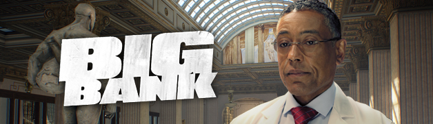
Big Bank DLC Released and New Contact Revealed
8/06/2014
If money is the lifeblood of this city, then the Benevolent bank is its beating heart.
The Big Bank DLC is the sixth DLC pack for PAYDAY 2 and adds the new contact the Dentist, the biggest heist yet called the Big Bank as well as the new Preplanning feature. This is the ultimate bank robbery – achieved by stealthy guile or relentless force. Can you make history by planning the perfect heist? The Benevolent Bank, more commonly known as the Big Bank, has never been robbed. Many have tried. The Nestor gang in ’40, the Beltway Bunch in ’77. All failed. You’re going to change that.
Together with the Big Bank job, you also get the Falcon Rifle and its weapon mods as well as four all-new masks, materials and patterns. To give you a real challenge, 10 heist specific achievements have been added.
• Introducing the Dentist
• The biggest heist in the history of PAYDAY
• Plan your heists like never before with Preplanning
• “The right arm for the Free World” – enjoy the new Falcon rifle
• 4 new masks based on our forefathers
• 4 new materials and patterns
• 10 new achievements with in-game rewards
• Read about it all right here!
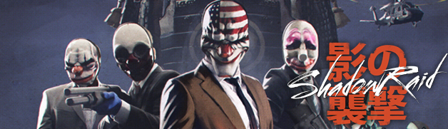
New Stealth Heist Revealed
8/06/2014
The Shadow Raid Heist is the fourth free heist update to PAYDAY 2. It allows heisters to take a new contract from Bain and Gage called the Shadow Raid job.
This update is completely free and also introduces a free mask, the “Somen Mempo” mask, as well as 6 new achievements.
• A new heist available for free
• The first stealth only heist
• Steal an ancient samurai armor
• Unlock a new mask
• 6 new achievements to unlock
• Game size decreased by 20GB
• Read about it all right here!
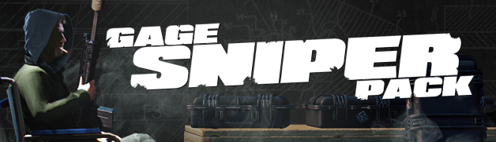
Sniper DLC Released to Payday 2
9/05/2014
The Gage Sniper Pack DLC is the fifth DLC pack for PAYDAY 2 and adds powerful sniper rifles to the player’s weapon arsenal. The bullets from a sniper rifle have armor penetration which means they can go through objects like walls. One bullet can even pierce several enemies.
Three sniper rifles, weapon mods, four new masks, patterns and materials as well as free updates like the golden AK.762 rifle, 17 achievements and the ability to move and re-name weapons and masks in the player inventory.
• Introducing sniper rifles
• 17 new achievements with in-game rewards
• Four new masks, materials and patterns
• You can now use zip-lines
• Vantage point assets
• Rename and move weapons and masks
• Read about it all right here!
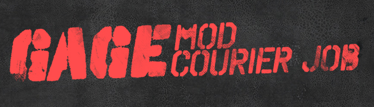
Gage Mod Courier DLC Is Here
10/04/2014
The Gage Mod Courier DLC is the fourth DLC for PAYDAY 2. It allows players to act as a courier for Gage the arms dealer, picking up packages containing mods that are scattered all over D.C. The DLC introduces no less than 28 new weapon modifications for the player to tinker with. 10 achievements are also added for players that enjoy achievement hunting.
• Act as a weapon mod courier
• 5 package types to find
• 28 new weapon mods to unlock
• Ten new achievements to unlock
• Introducing Reticle Switches
• Read about it all right here!
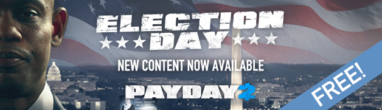
Election Day Heist Free for All Players
19/03/2014
The Election Day Heist is the third free heist update to PAYDAY 2. It allows heisters to take a new contract from the corrupt politician the Elephant called the Election Day job.
This update is completely free and also introduces a free pistol weapon, the “Chimano Custom” pistol, skill changes, a big stealth update as well as new assets such as the Spotter who helps to spot guards and the Body Bags asset that lets you share body bags with your crew.
• A new heist available for free
• A free pistol weapon
• The big stealth update
• New asset types
• Skill changes
• 10 new achievements to unlock
• Read about it all right here!
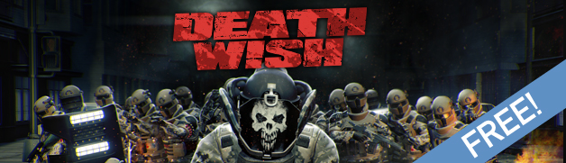
Death Wish Difficulty Released
28/02/2014
The Death Wish update is the second late-game update for PAYDAY 2. It allows players to explore the new Death Wish difficulty, introduces two new enemy types, four new masks and a whopping 35 new achievements to unlock.
This update is completely free and also introduces a free melee weapon, the “350K” brass knuckles, packing the punch of 350,000 community members.
• New “Death Wish” difficulty level
• Two new enemy types
• Four new masks to be earned for those with a death wish
• A free melee weapon
• 35 new achievements to unlock
• Read about it all right here!
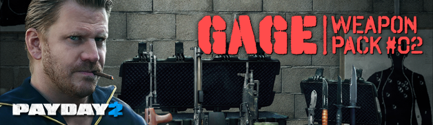
The Gage Weapon Pack #02 Has Arrived
31/01/2014
The Gage Weapon Pack #02 is the third DLC pack for PAYDAY 2. The Cloaker makes a return to put fear in the hearts of every criminal. Gage has the perfect antidote however and brings back the Light Machine Gun and introduces melee combat weapons to counter them. With the Light Machine Guns, players can provide cover for each other by unleashing devastating attacks.
Old Friends Return!
29/01/2014
• Cloakers have returned! They’re available for everyone for free
• The Brenner-21 Light Machine Gun is back + the KSP Light Machine Gun and the RPK Light Machine Gun
• Guns for show, knives for pro’s – experience close combat with the Ursa Knife, Krieger Blade, Berger Combat Knife and the Trautman Knife
• Four new masks, materials and patterns
• Ten new achievements to unlock
• Read about it all right here!
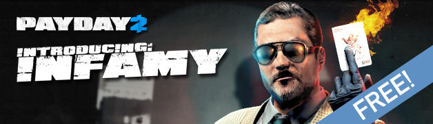
Introducing Infamy to Payday 2
23/01/2014
The Infamy update is the first free late-game update to PAYDAY 2. It allows high-level players to explore the new Infamy tree and gain rewards such as skill tree bonuses along with masks, materials and patterns.
• Time to become Infamous – With the Infamy system the player can continue to advance beyond reputation level 100
• Five new infamous masks
• Four new materials
• Four new patterns
• Read about it all right here!
A Merry Payday Christmas!
20/12/2013
Introducing the perfect gift for the discerning PAYDAY player! This festive Christmas album is packed with no less than six seasonal hymns, written and produced by OVERKILL’s own Simon Viklund and performed by the inimitable Pete Gold (A.K.A. Old Hoxton), known from the classic First Person Shooter “PAYDAY: The Heist”.
The PAYDAY 2: A Merry Payday Christmas Soundtrack includes Karaoke versions so you can do your own singing! Next stop, Youtube!
• A new soundtrack with six new seasonal hymns sung by Pete Gold, the voice of “Old Hoxton” from PAYDAY: The Heist
• Three new Santa masks
• Every purchase gives three gift copies to give away
• Read about it all right here!
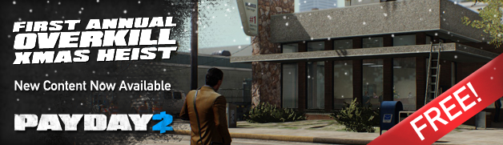
The Charlie Santa Heist is out!
20/12/2013
The Charlie Santa Heist is the first annual OVERKILL Xmas heist for PAYDAY 2, is added for free to all of our players, and lets players do a classic bank job – robbing the GO Bank, based on a map from Counterstrike: Global Offensive, in the outskirts of Washington D.C.
• A new heist available for free
• A free weapon modification
• A free Santa mask for anyone who joins the Official PAYDAY 2 group on Steam
• Nine new achievements to unlock
• Read about it all right here!
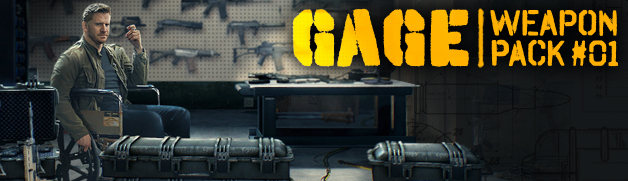
The Gage Weapon Pack #01 DLC is here!
6/12/2013
The Gage Weapon Pack #01 is the second DLC pack for PAYDAY 2. Frag Grenades make their first entry into the PAYDAY series and are bound to spice things up. There’s also a new Grenade Case asset, three new weapons, four new animal masks and a toggle between Single- and Auto-fire with full auto weapons for all the head-shot enthusiasts out there.
• The Frag Grenade is now available
• Three new weapons, personal favorites of Gage the arms dealer
• Weapon slots increased from 18 to 72
• Four new animal masks, patterns and materials
• Ten new achievements to unlock
• Read about it all right here!
The Armored Transport DLC has arrived!
15/11/2013
The Armored Transport DLC is the first DLC pack for PAYDAY 2 and lets players do every heisters dream – robbing armored transports, full of valuables, right in the middle of Washington D.C. If they’re lucky, they can hit it big with a classic train robbery.
• 2 new heists spread over 6 locations
• 3 new weapons of choice
• 4 new masks, patterns and materials
• New achievements, free community mask and more
• Read about it all right here!
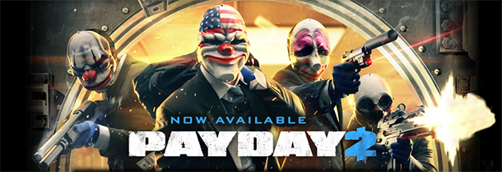
The Wait Is Over, PAYDAY 2 Is Here!
13/08/2013
PAYDAY 2 is out now on Steam, Xbox360 and PS3! Buy it now right here!
About the Game
PAYDAY 2 is an action-packed, four-player co-op shooter that once again lets gamers don the masks of the original PAYDAY crew – Dallas, Hoxton, Wolf and Chains – as they descend on Washington DC for an epic crime spree.
The new CRIMENET network offers a huge range of dynamic contracts, and players are free to choose anything from small-time convenience store hits or kidnappings, to big league cyber-crime or emptying out major bank vaults for that epic PAYDAY. While in DC, why not participate in the local community, and run a few political errands?
Up to four friends co-operate on the hits, and as the crew progresses the jobs become bigger, better and more rewarding. Along with earning more money and becoming a legendary criminal comes a new character customization and crafting system that lets crews build and customize their own guns and gear.